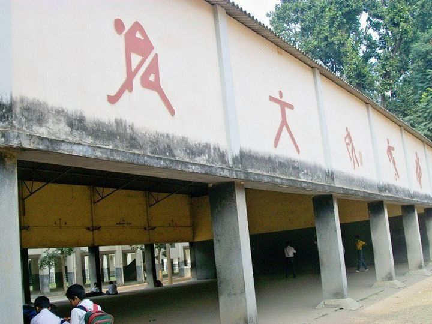

School Library
Was built in 1950
School library was built in 1950. It has a collection of books. The books contain moral stories, poems. The books have stories which make us understand about the importance of life and moral values of life. So, therefore, I would like to say that the books in the library is a main part of our life.

School Auditorium
Was built in 1950
School auditorium was built in 1950.It is also known as assembly hall. It is a necessary and centrally located unit of a school plant. In most schools, the assembly hall has multiple uses including an auditorium where recreational activities and celebrations could take place, daily prayers can be held.The principal can address or conduct a meeting for all the students and teachers simultaneously, curricular and creative activities such as dramatics, music, debates etc. can be carried out.It can also be used for holding public lectures or as a gymnasium for school students. School halls’ existence dates back to almost one hundred and fifty years. Very often, a school hall is also used by the community members for various educational, cultural or social purposes.Thus, the size of a school hall is to be determined on the basis of its uses and functions as well as on the basis of enrolment capacity of the school. It should be large enough to accommodate at least half the number of students enrolled in the school.The school hall should be located on the ground floor and should be easily accessible from all the classrooms as well as from outside the school.It should be preferably located in a separate wing so that while it is being used, classes do not get disturbed due to noise and crowds. It should be made sound-proof. There should be parking facilities outside or near the school hall.A good auditorium must have good acoustics. There should be a speaker’s stand and a few chairs for the presiding officer and others. There should be a mike and speakers in the hall.The hall should be constructed in such a way that the speaker’s voice is clearly heard in the entire hall without strain or echoes. The acoustics and the appearance of the hall can be improved using appropriate special plaster, curtains, wall hangings and absorbent ceilings.The lighting facilities in the hall should be flexible. There should be facilities for increasing or decreasing the intensity of light and changing its color. Adequate facilities of flood light and spot light should be available.
.jfif)
School Playground
Was built in 1950
School Playground was built in 1950.It has a huge boundary wall on right side. We play all types of games in the playground. We play volley-ball, hockey, football, cricket and basket ball, our school Principal encourages all students to play one or the other game. We have very strong teams of players; they practice different games in the playground.